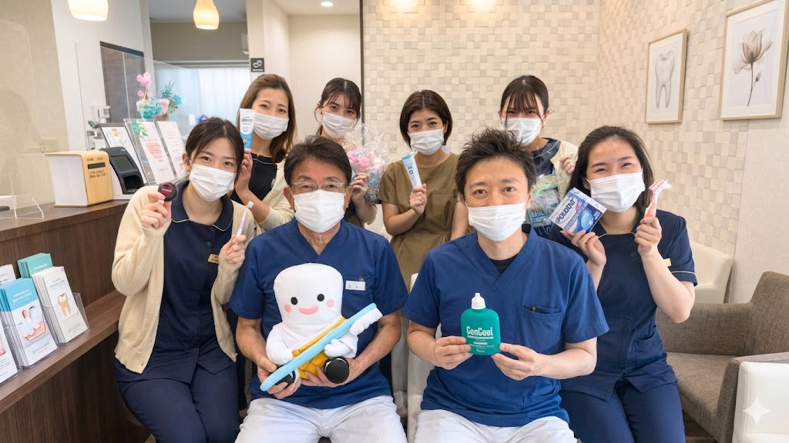
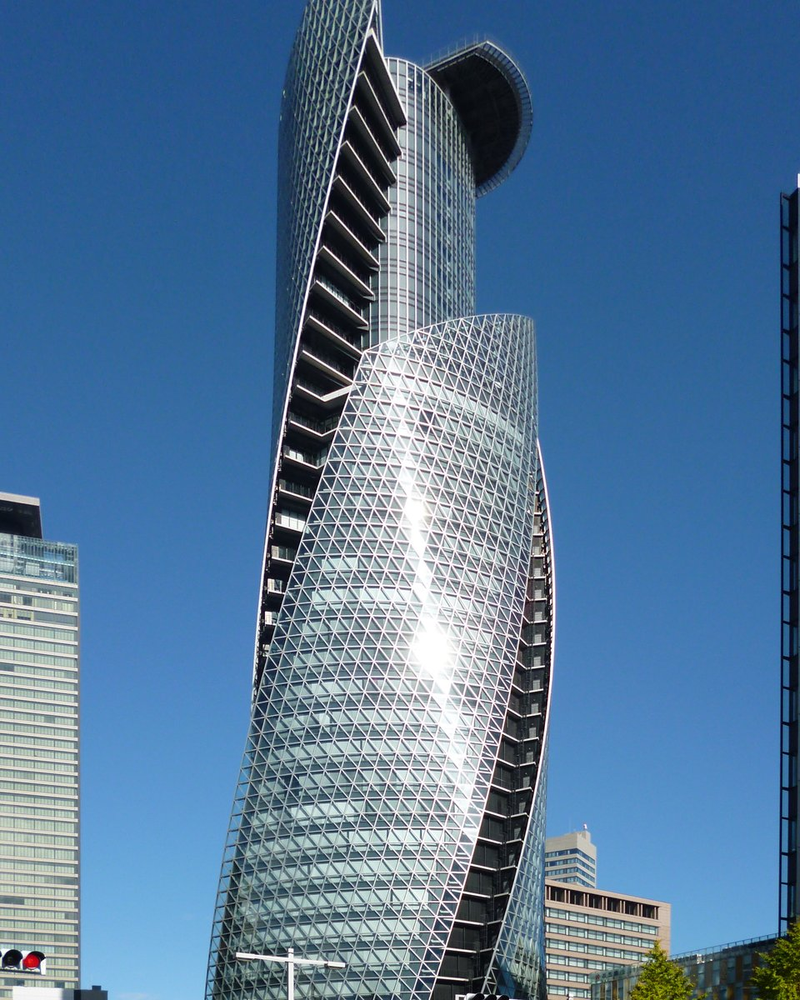
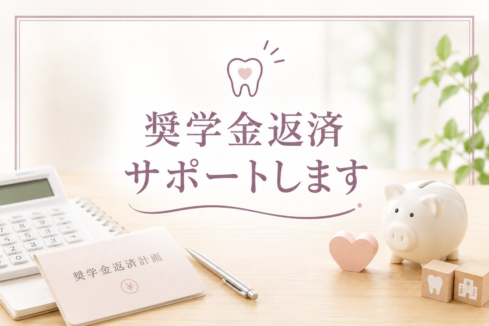
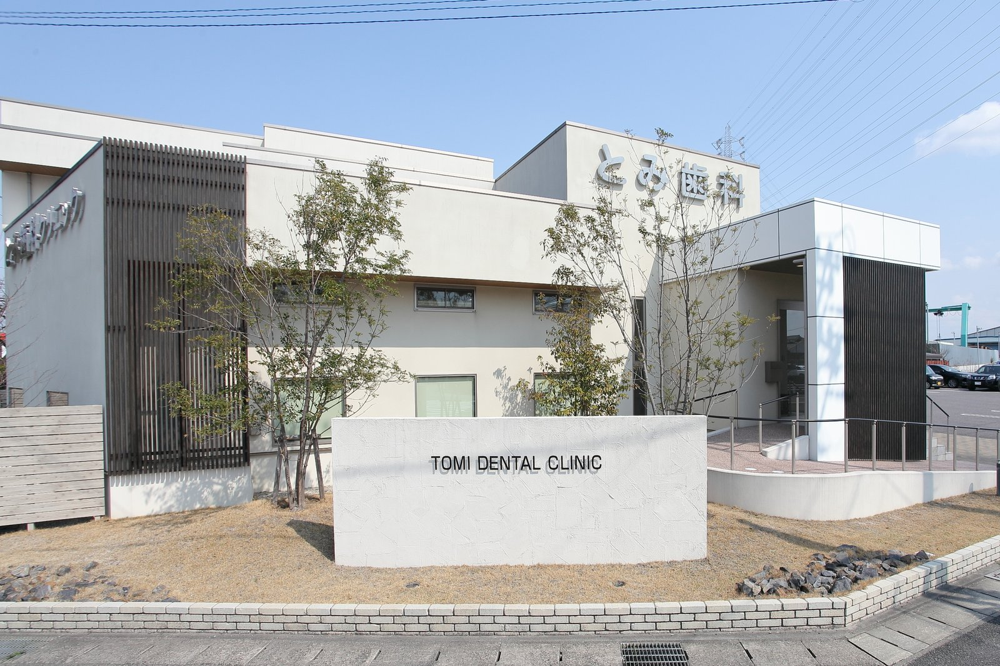

歯科衛生士 奨学金制度のご案内

当院の奨学金制度で
歯科衛生士の
国家資格取得を目指しませんか？
これから歯科衛生士を目指す高校生・社会人・親御様へ
当院では、二つの奨学金制度をご用意しています。
- 高校三年生で、これから歯科衛生士養成校への進学を目指される学生さんへ
- すでに歯科衛生士養成校に在学していて、経済的に安心して学業に専念したい方へ
- 歯科助手として働きながら、国家資格を取って歯科衛生士へステップアップしたい方へ
- 業界未経験だけれど、手に職をつけて歯科衛生士に転職したい社会人の方へ
-
歯科衛生士とは？
歯科衛生士とは、歯科医院で歯磨き指導やお口の中のクリーニングを行うお仕事です。たまった歯石の除去や、メンテナンスの指導など、口腔ケアに関する専門知識を持っています。
歯科衛生士になるには？
歯科衛生士になるためには、国家試験を受験し、合格する必要があります。学べる場所は、大学や短期大学、専門学校があり、中でも歯科衛生士は専門学校出身者が多いのが特徴です。
歯科衛生士の可能性は、とても大きい
「歯を削るのではなく、守ること」「歯を治療するのではなく、予防すること」。歯科衛生士さんの力・可能性はとても大きく、歯科業界にとっても地域の方々にとっても、とても大切な存在だと考えています。
将来性が高く、おすすめできる職業です。
全国的に歯科衛生士は不足しており、求人倍率が高い人気職種です。高齢化社会が進むにつれ、お口の健康管理の需要はますます増加。今後さらに活躍が期待される職業です。
- 夜勤がない
- 産休・育休を整えている職場が多い
- 求人募集が多くある
- 有給休暇も比較的取りやすい
- 手に職がつく／専門性を追求できる
- 一般企業に比べ休みが多い
愛知県の歯科衛生士学校一覧
歯科衛生士になるには、歯科衛生士養成校（専門学校・短期大学など）で3年以上学ぶ必要があります。愛知県内には、下記のような養成校があります。学校選びの参考に、各校の公式ホームページもあわせてご覧ください。
夜間部のある学校をお探しの方へ
お仕事をしながら、または昼間の時間を活用しながら歯科衛生士を目指したい方には、夜間部のある学校がおすすめです。愛知県内では、名古屋医専が昼間部・夜間部の両方を持つ人気校です。
RECOMMENDED
名古屋医専 歯科衛生士学科
Nagoya College of Medical-care & Welfare
夜間部は、歯科クリニックで働きながら午前の診療後に通うことができ、社会人や働きながら資格取得を目指す方に多く選ばれています。名古屋駅から徒歩約3分とアクセスも良好です。

愛知県内の歯科衛生士養成校
下記の各校は、当院の奨学金制度の対象となります。気になる学校はぜひ公式サイトもチェックしてみてください！
※学校名・所在地・公式サイトは制作時点の情報です。最新の募集状況・学費・入試日程などは、必ず各校の公式サイトでご確認ください。
※当院の奨学金制度は、上記いずれの学校に通われる方でもご相談いただけます。
学費の面でのネックが大きいのも現状です
-
歯科衛生士養成校でかかる学費
メリットの多い職業の一方で、歯科衛生士養成校でかかる学費は決して小さくありません。3年間の合計で約240万円ほどが必要になります。学費の一例は、下記の通りです。
| 入学金 | 約 300,000円 |
|---|---|
| 1年次諸経費（教科書・実習衣・器具等） | 約 300,000円 |
| 1学年の授業料＋実習費 | 約 600,000円 |
| 2学年の授業料＋実習費 | 約 600,000円 |
| 3学年の授業料＋実習費 | 約 600,000円 |
| 3年間の合計 | 約 2,400,000円 |
3年生を乗り切るのが大変。
歯科衛生士学校の先生方とお話しする中で、3年生になってから学費を払うのが大変になる生徒さんがいると何度か伺いました。勉強と実習でアルバイトに行けなくなり、学費の支払いが大変になってしまうことがあるようです。2年間頑張ってきたのだから、あと1年頑張ってほしい――そういった方のお役に少しでも立てないかと、この制度を作りました。
歯科衛生士を目指している全ての方に、諦めないでほしい――その一心で作った制度です。
とみ歯科クリニックの奨学金制度について

-
歯科衛生士になる夢を、あきらめてほしくない
そのような想いで、奨学金制度を設けています。様々な事情で金銭的な負担から歯科衛生士をあきらめてしまう前に、当院がその未来のサポートをできるかもしれません。入学時から必要な場合も、お気軽にご相談ください。
金額や年数は、お一人おひとりの状況に合わせた個別のご相談で決定いたします。
2つの奨学金制度
進学のタイミングやご状況に合わせて、2つの制度からお選びいただけます。あなたに合う制度はどちらでしょうか？
PLAN 1
1年生からの奨学金
72万円 最大3年間で（目安）
対象これから歯科衛生士養成校への進学を目指す方（高校生・社会人など）
用途入学時から卒業までの学費・諸経費の負担を、長期的にサポート
おすすめ早めに進路を決め、計画的に学費の準備を進めたい方
PLAN 2
3年生のみの奨学金
40万円 3年生の学費に（目安）
対象すでに歯科衛生士養成校に在学中で、3年生の学費に備えたい方
用途勉強と実習が忙しくなる最終学年。あと1年を安心して乗り切る支え
おすすめ3年生になって学費の負担が心配になってきた方
※貸与額・年数は目安です。実際の金額は、お一人おひとりの状況に合わせた個別のご相談で決定いたします。
ご利用の条件
当院にてアルバイトをしていただくことが条件になります。
在学中、当院でアルバイト（または研修）として勤務していただくことが、この制度のご利用条件です。アルバイト代は奨学金とは別に、きちんとお支払いします。
- アルバイト時給：1,350円（奨学金とは別に支給）
- 貸与する奨学金：月々 1万円〜2万円
- 勤務頻度：月2回程度（学校の試験期間などは調整可能）
在学中から現場を経験できるため、卒業後すぐに自信をもって働き始められます。
奨学金制度の流れ
まずはお気軽なご相談から。下記の流れで進めてまいります。
- STEP1ご相談・お問い合わせ
- まずはお気軽にご連絡ください。
お電話、またはLINEより受け付けています。「制度について詳しく知りたい」「自分は対象になる？」といった段階のご質問でも構いません。ご本人だけでなく、保護者の方からのお問い合わせも歓迎しております。 - STEP2医院にて説明＆面接
- 当院にお越しいただき、奨学金制度の詳しいご説明と面接を行います。
制度の内容・金額・返済の仕組みなどを、その場でしっかりご説明します。疑問や不安な点は遠慮なくお尋ねください。あわせて、職場の雰囲気を知っていただくための医院見学も可能です。保護者の方とご一緒の参加も歓迎です。 - STEP3ご家族との検討・合意
- 説明内容をお持ち帰りいただき、ご家族ともよくご相談ください。
その場での即決は必要ありません。制度の内容にご納得いただけましたら、お互いに合意のうえで次のステップへ進みます。少しでも気になる点が残っていれば、改めてご相談を承ります。 - STEP4契約
- 奨学金に関する契約を取り交わします。
貸与する金額・期間・返済の条件などを書面で明確にし、双方で確認したうえで契約を結びます。「言った・聞いていない」が起きないよう、条件はすべて書面に残します。 - STEP5奨学金の貸与スタート・学業に専念
- 契約後、奨学金の貸与が始まります。
毎月の奨学金を学費や生活費の支えとしてご活用いただき、安心して学業に専念してください。経済的な心配を減らし、勉強と実習に集中できる環境を整えることが、この制度の目的です。 - STEP6在学中の研修・アルバイト勤務
- 在学中は、月2回程度の研修またはアルバイトとして当院で勤務していただきます。
アルバイト代は奨学金とは別に、時給1,350円でお支払いします。在学中から実際の現場を体験できるため、卒業後すぐに即戦力として活躍しやすく、職場にも自然になじめます。学校の試験期間などはシフトを調整しますので、学業との両立が可能です。 - STEP7卒業前の最終面談
- 卒業を前に、最終面談を行います。
ご本人の今後の希望と、医院の方向性をあらためて確認します。当院での勤務を続けるか、他院で働くかは、ご本人が自由に選べます。どちらを選ばれても、返済方法をご案内し、無理のない形で進められるようサポートします。
制度のポイント（まとめ）
- 相談・面接の段階では、まだ申し込みを決めていなくても大丈夫です
- 金額や年数は、お一人おひとりの状況に合わせて個別に決定します
- 奨学金とアルバイト代は別々に支給されます
- 在学中から現場を体験できるので、卒業後の不安が少なくなります
- 卒業後の勤務先（当院か他院か）は、ご本人が自由に選べます
卒業後の奨学金返済について
-
返済方法は2つから選べます
卒業後の進路はご本人の自由です。当院で勤務される場合は、勤務期間に応じて返済が免除され、他院で勤務される場合は分割返済となります。どちらの方法を選んでも構いません。
PLAN 1
当院（とみ歯科）で勤務する
免除 勤務期間に応じて返済免除
返済方法1ヶ月の勤務ごとに1万円ずつ返済したものとみなします。給与から差し引かれることもありません。
具体例貸与額が30万円なら2年6ヶ月、72万円なら6年間の勤務で返済の義務はなくなります。
こんな方にとみ歯科クリニックで、そのまま歯科衛生士として働きたい方
PLAN 2
当院以外で勤務する
分割 月10,000円ずつ返済
返済方法月10,000円ずつ、分割でご返済いただきます。一括返済や繰り上げ返済も可能です。
具体例貸与額が30万円の場合、月1万円ずつで30回（2年6ヶ月）でのご返済となります。
こんな方に地元に戻る・別の医院を希望するなど、勤務先を自由に選びたい方
※どちらの方法を選んでも構いません。卒業前の最終面談で、ご希望をうかがいながら決めていきます。
こんな方に、ぜひご利用いただきたい制度です
高校生の方も、お仕事をしながら目指す社会人の方も、進路を一緒に考える親御様も――立場を問わず、歯科衛生士という目標に向かう方を応援します。
このような想いのある方へ
- 医療職につきたい／歯科衛生士になりたい
- 安定した職場で働きたい
- 人の役に立つ職業につきたい
- 手に職をつけたい
- 将来性のある職場で働きたい
- 学費のことで親に負担をかけたくない
- 歯科助手として働いているが、国家資格を取ってステップアップしたい
- 業界未経験だが、手に職をつけて歯科衛生士に転職したい
応募資格
- 将来、歯科衛生士になりたいという想いがある方
- 返済義務免除期間は休業をせず（有給休暇は除く）、指定の期間までまじめに勤められる方
- 明るく、前向きな性格の方
- 健康な方
※高校生の方も、社会人の方も歓迎します。歯科助手の経験がある方も、業界未経験の方も、年齢や現在のお仕事は問いません。働きながら夜間部に通って目指す方のご相談も承ります。
当院の参考給与
当院の歯科衛生士の給与モデルです。経験・スキルに応じて優遇いたします。
国家資格取得後は、
月収30万円 〜！
月給 290,000円〜 ＋ 皆勤手当 10,000円 ＝ 月収 300,000円〜
※経験・スキルに応じて、さらに優遇します。
| 月給 | 290,000円〜 ・基本給：250,000円〜 ・資格手当：40,000円〜 |
|---|---|
| 皆勤手当 | 10,000円（上記月給とは別途支給） |
| 賞与 | 年2回（前年度実績 計2.0ヶ月分） |
| 昇給 | あり |
よくあるご質問
- Q歯科衛生士学校の履修期間は何年間ですか？
- A履修期間は3年間です。
- Q歯科衛生士になるにはどうしたらいいですか？
- A歯科衛生士養成校（専門学校など）で3年間の履修期間を修了し、歯科衛生士国家試験に合格すると、歯科衛生士として業務が可能になります。
- Q国家試験は難しいのですか？
- A歯科衛生士国家試験の合格率は例年90％台と高い水準です。専門学校のカリキュラムをしっかりとこなし、進級試験・卒業試験などをパスすることが重要です。
- Q業界未経験の社会人ですが、今から歯科衛生士を目指せますか？
- Aはい、目指せます。働きながら学べる夜間部のある養成校もあり、別の業種から歯科衛生士を目指す社会人の方は少なくありません。「手に職をつけたい」という想いがあれば、未経験からでも挑戦できます。当院の奨学金制度も社会人の方にご利用いただけますので、まずはお気軽にご相談ください。
- Q歯科助手として働いていますが、奨学金制度は利用できますか？
- Aはい、ご利用いただけます。歯科助手として現場を経験された方が、国家資格を取得して歯科衛生士へステップアップされるケースもあります。これまでのご経験は必ず活きますので、ぜひご相談ください。
- Q親の負担を少しでも減らしたいのですが、アルバイト等はできますか？
- A可能です。学生さんの中には、アルバイトをしながら通学される方も少なくありません。試験前などは調整を行うことをおすすめします。当院の奨学金制度も、ぜひご活用ください。
- Q医院を見学したいのですが可能ですか？
- Aはい、可能です。職場の雰囲気を事前に確認することはとても大切です。保護者の方とご一緒の見学も可能ですので、お気軽にお越しください。
奨学金制度について、お気軽にご相談ください

「本当にこんな制度があるの？」と思われた方も、まずはお気軽にお問い合わせください。
心より見学・面接お待ちしております。
| お電話 | 0569-73-7333 受付時間／診療時間内（最終受付は終了時間の30分前） |
|---|---|
| LINEで お問い合わせ |
下記のQRコードを読み取るか、ボタンをタップしてLINE友だち追加のうえ、お気軽にメッセージをお送りください。 |